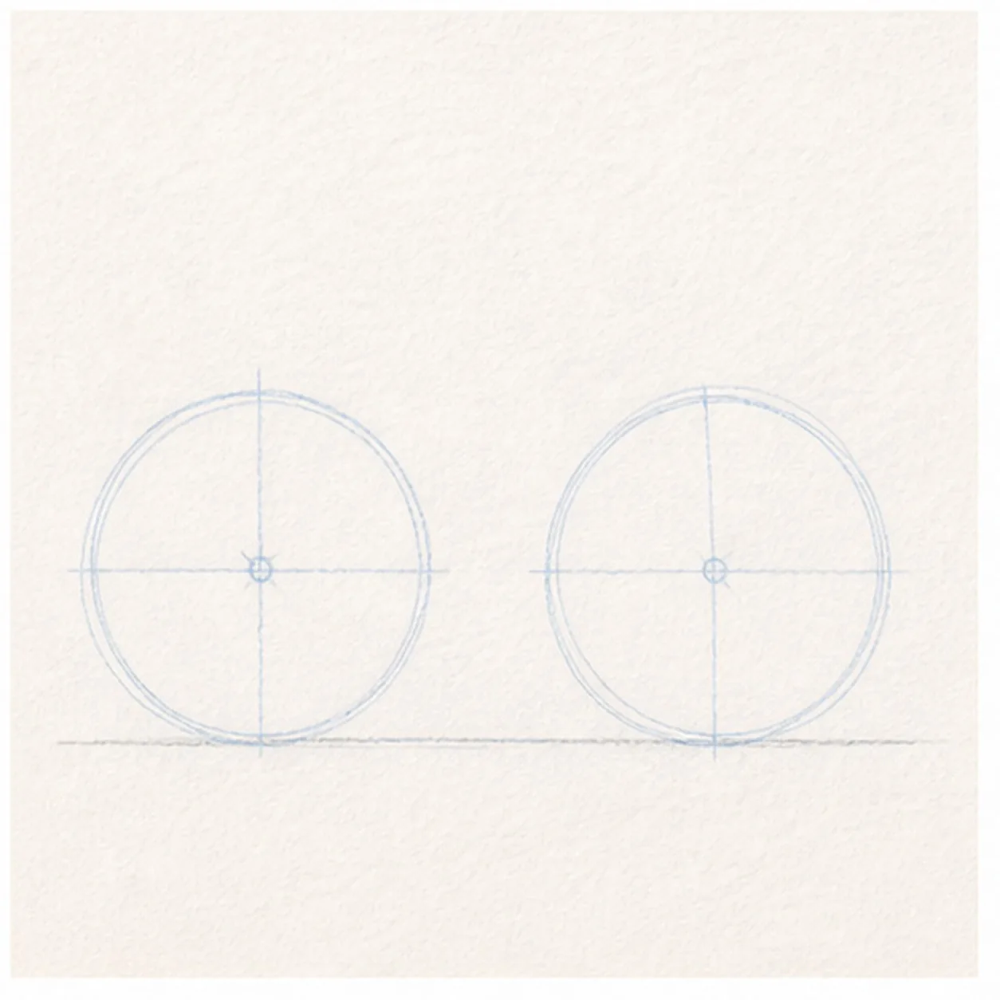
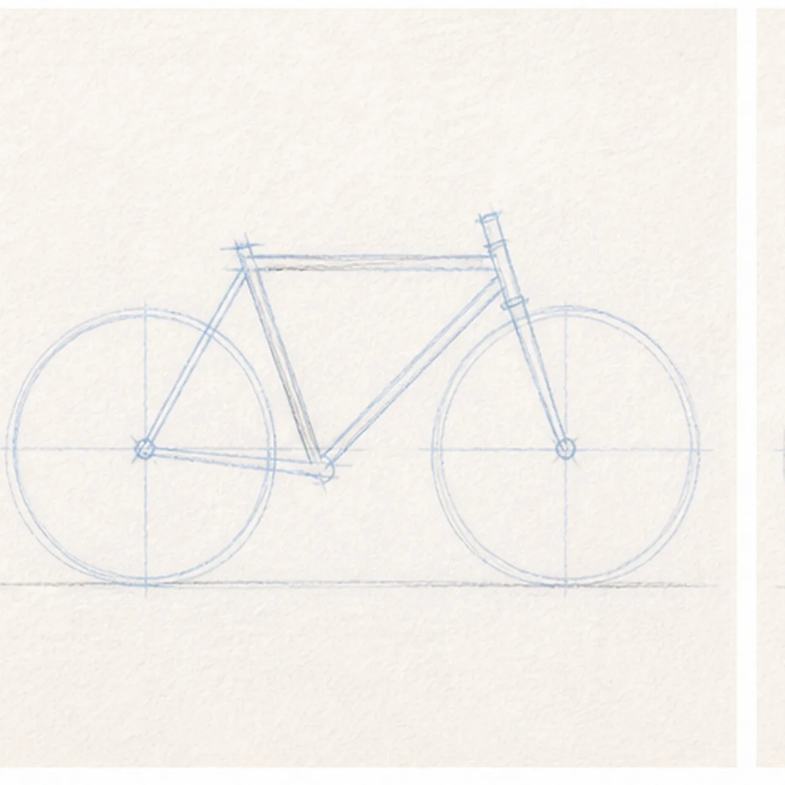
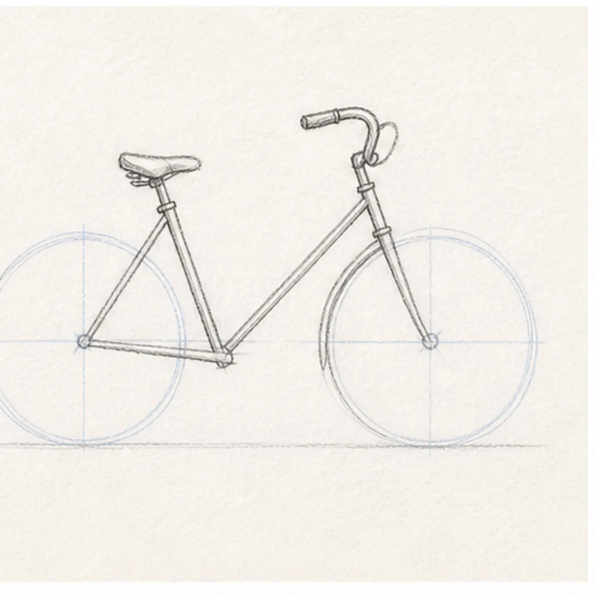
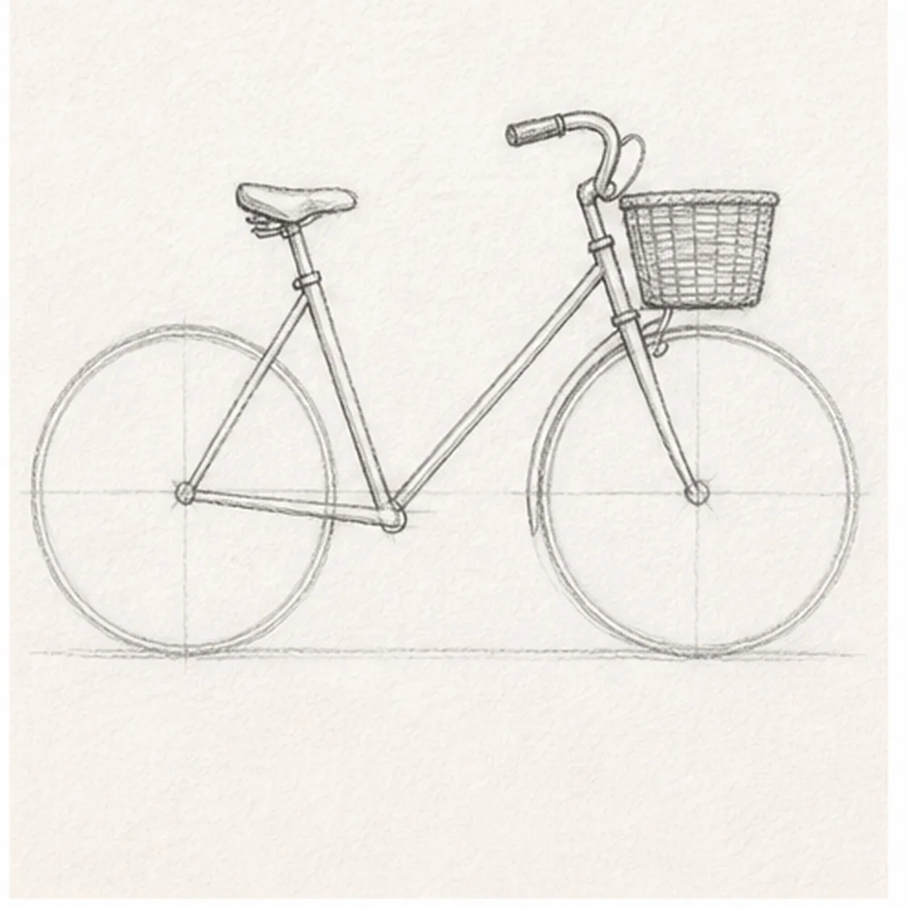
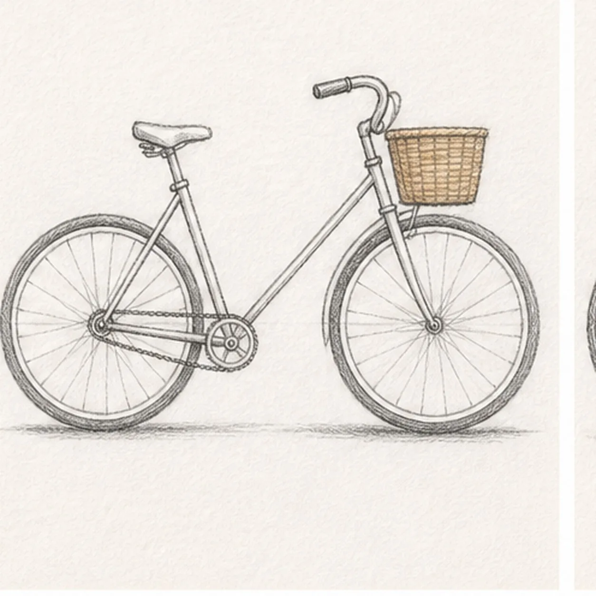

From the archive
Let's draw an old-fashioned bicycle with a basket
Treat this as one small practice round: build the subject lightly, notice the shapes, then darken only the lines that help the finished sketch.
-
01

Set the wheels
Draw two light wheel circles on the same ground line, leaving a comfortable gap between them.
Sketch tip: Spend an extra moment matching the wheel size. Even old bicycles look better when the wheels agree.
-
02

Connect the frame
Add the simple frame triangle between the wheels, using straight lines that meet near the wheel hubs.
Sketch tip: Keep the frame open and simple. The triangle matters more than tiny metal parts.
-
03

Add seat and handlebar
Place a small seat above the back wheel and a curved handlebar above the front fork.
Sketch tip: Let the handlebar curl just a little. That old-fashioned curve gives the bike personality.
-
04

Hang the basket
Draw a small basket above the front wheel, attached to the handlebar area.
Sketch tip: Use a simple trapezoid basket shape first. The weave lines can wait until the structure is clear.
-
05

Add spokes and shade
Add light spokes, a simple chain line, a few basket weave marks, warm basket tint, and soft shadows under the tires.
Sketch tip: Suggest the spokes instead of drawing every one perfectly. Light repeated lines are enough.
-
06

Finish the bicycle sketch
Darken the keeper contours, clarify the spokes, chain, handlebar, seat, and basket weave, and deepen the existing tint and tire shadows.
Sketch tip: Stop before adding a street scene or flowers. The basket, wheels, frame, and handlebar already make the bicycle readable.